人工智能
人工智能
TR-4981：《借助Amazon FSx ONTAP降低Oracle Active Data Guard成本》
 建议更改
建议更改
NetApp公司Allen Cao、Niyaz Mohamed
目的
Oracle Data Guard可确保主数据库和备用数据库复制配置中企业数据的高可用性、数据保护和灾难恢复。Oracle Active Data Guard使用户能够在从主数据库到备用数据库的数据复制处于活动状态时访问备用数据库。Data Guard是Oracle数据库企业版的一项功能。它不需要单独的许可。另一方面、Active Data Guard是Oracle数据库企业版选件、因此需要单独的许可。在Active Data Guard设置中、多个备用数据库可以从主数据库接收数据复制。但是、每个附加备用数据库都需要Active Data Guard许可证以及与主数据库大小相同的额外存储。运营成本会迅速增加。
如果您希望降低Oracle数据库运营成本、并计划在AWS中设置Active Data Guard、则应考虑另一种选择。使用Data Guard将数据从主数据库复制到Amazon FSx ONTAP存储上的单个物理备用数据库、而不是Active Data Guard。随后、可以克隆此备用数据库的多个副本并打开以进行读/写访问、以满足许多其他使用情形的需要、例如报告、开发、测试等 最终结果有效地提供了Active Data Guard的功能、同时消除了Active Data Guard许可证、并为每个额外的备用数据库节省了额外的存储成本。在本文档中、我们将演示如何在AWS中使用现有主数据库设置Oracle Data Guard、并将物理备用数据库放置在Amazon FSx ONTAP存储上。备用数据库通过Snapshot进行备份、并根据需要进行克隆、以便进行读/写访问。
此解决方案 可解决以下使用情形：
-
在AWS中任何存储上的主数据库与Amazon FSx ONTAP存储上的备用数据库之间建立Oracle Data Guard。
-
在关闭以进行数据复制的情况下克隆备用数据库、以满足报告、开发、测试等使用情形的要求
audience
此解决方案 适用于以下人员：
-
在AWS中设置Oracle Active Data Guard以实现高可用性、数据保护和灾难恢复的数据库管理人员。
-
对AWS云中的Oracle Active Data Guard配置感兴趣的数据库解决方案架构师。
-
负责管理支持Oracle Data Guard的AWS FSx ONTAP存储的存储管理员。
-
希望在AWS FSX/EC2环境中部署Oracle Data Guard的应用程序所有者。
解决方案 测试和验证环境
此解决方案的测试和验证是在AWS FSx ONTAP和EC2实验室环境中执行的、该环境可能与最终部署环境不匹配。有关详细信息，请参见一节 [Key Factors for Deployment Consideration]。
架构
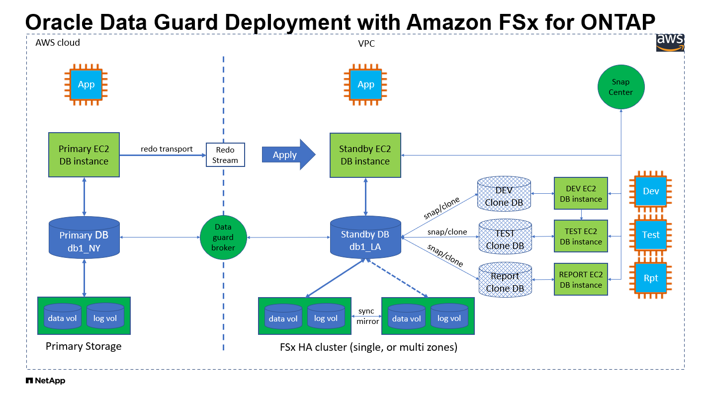
硬件和软件组件
* 硬件 * |
||
FSX ONTAP 存储 |
AWS提供的当前版本 |
一个FSX HA集群位于同一VPC和可用性区域中 |
用于计算的EC2实例 |
t2.xlarge/4vCPU/16G |
三个EC2 T2大型EC2实例、一个用作主数据库服务器、一个用作备用数据库服务器、第三个用作克隆数据库服务器 |
软件 |
||
RedHat Linux |
rhel-8.6.0_hvm-20220503-x86_64-2-Hourly2-gp2 |
已部署RedHat订阅以进行测试 |
Oracle网格基础架构 |
版本19.18 |
已应用RU修补程序p34762026_190000_Linux-x86-64.zip |
Oracle 数据库 |
版本19.18 |
已应用RU修补程序p34765931_190000_Linux-x86-64.zip |
Oracle OPatch |
版本12.2.0.1.36 |
最新修补程序p6880880_190000_Linux-x86-64.zip |
采用从纽约到洛杉矶灾难恢复的假设设置的Oracle Data Guard配置
* 数据库 * |
DB_UNIQUE_NAME |
Oracle Net Service Name |
主卷 |
DB1_NY |
db1_NY.demo.netapp.com |
物理备用 |
DB1_LA |
db1_LA.demo.netapp.com |
部署注意事项的关键因素
-
Oracle备用数据库FlexClone的工作原理。 AWS FSx ONTAP FlexClone为可写的同一备用数据库卷提供共享副本。卷的副本实际上是指向原始数据块的指针、直到克隆开始新的写入为止。然后、ONTAP会为新写入分配新的存储块。所有读取IO都由活动复制下的原始数据块提供服务。因此、克隆的存储效率非常高、可用于许多其他使用情形、只需为新写入IO分配最少的增量新存储即可。这样可以大幅减少Active Data Guard存储占用空间、从而显著节省存储成本。NetApp建议在数据库从主存储切换到备用FSx存储时尽量减少FlexClone活动、以便将Oracle性能保持在较高水平。
-
* Oracle软件要求。*一般来说、物理备用数据库必须与主数据库具有相同的Database Home版本、包括修补程序集例外(Patch Set例外、PSE)、关键修补程序更新(Critical Patch Update、CPU)、 和补丁集更新(PSU)、除非正在执行Oracle Data Guard Standby-First Patch Apply进程(如上的My Oracle Support note 1265700.1中所述) "support.oracle.com"
-
*备用数据库目录结构注意事项。*如果可能、主系统和备用系统上的数据文件、日志文件和控制文件应具有相同的名称和路径名称、并使用最佳灵活架构(OFA)命名约定。备用数据库上的归档目录也应在站点之间完全相同、包括大小和结构。此策略允许备份、切换和故障转移等其他操作执行相同的步骤集、从而降低维护复杂性。
-
*强制日志记录模式。*要防止主数据库中未记录的无法传播到备用数据库的直接写入、请在执行数据文件备份以创建备用数据库之前、在主数据库中启用强制日志记录。
-
*数据库存储管理。*为简化操作、Oracle建议在Oracle Data Guard配置中设置Oracle自动存储管理(Oracle ASM)和Oracle托管文件(Oracle Managed Files、OMF)时、在主数据库和备用数据库上对称设置。
-
*EC2计算实例。*在这些测试和验证中，我们使用AWS EC2 T2.xlea占用 空间实例作为Oracle数据库计算实例。NetApp建议在生产部署中使用M5类型的EC2实例作为Oracle的计算实例、因为它已针对数据库工作负载进行了优化。您需要根据实际工作负载要求根据vCPU数量和RAM量适当调整EC2实例的大小。
-
* FSX存储HA集群单区域或多区域部署。*在这些测试和验证中、我们在一个AWS可用性区域中部署了一个FSX HA集群。对于生产部署、NetApp建议在两个不同的可用性区域中部署一个FSX HA对。FSx集群始终配置在HA对中、该HA对会在一对主动-被动文件系统中同步镜像、以提供存储级别冗余。多区域部署可在单个AWS区域发生故障时进一步提高高可用性。
-
* FSX存储集群规模估算。*适用于ONTAP 存储文件系统的Amazon FSX可提供高达160、000个原始SSD IOPS、高达4 Gbps吞吐量以及最大192 TiB容量。但是、您可以根据部署时的实际要求、根据已配置的IOPS、吞吐量和存储限制(最小1、024 GiB)来调整集群的大小。可以动态调整容量、而不会影响应用程序可用性。
解决方案 部署
我们假定您已将主Oracle数据库部署在VPC中的AWS EC2环境中、并以此作为设置Data Guard的起点。主数据库使用Oracle ASM进行部署以进行存储管理。 为Oracle数据文件、日志文件和控制文件等创建了两个ASM磁盘组-+data和+logs 有关使用ASM在AWS中部署Oracle的详细信息、请参阅以下技术报告以获得帮助。
主Oracle数据库可以运行在FSx ONTAP上、也可以运行在AWS EC2生态系统中的任何其他可选存储上。下一节介绍了在使用ASM存储的主EC2数据库实例与使用ASM存储的备用EC2数据库实例之间设置Oracle Data Guard的分步部署过程。
部署的前提条件
Details
部署需要满足以下前提条件。
-
已设置AWS帐户、并已在您的AWS帐户中创建必要的VPC和网段。
-
在AWS EC2控制台中、您至少需要部署三个EC2 Linux实例、一个作为主Oracle数据库实例、一个作为备用Oracle数据库实例、一个克隆目标数据库实例用于报告、开发和测试等 有关环境设置的详细信息、请参见上一节中的架构图。另请查看AWS "Linux实例用户指南" 有关详细信息 …
-
从AWS EC2控制台中、部署Amazon FSx for ONTAP存储HA集群以托管存储Oracle备用数据库的Oracle卷。如果您不熟悉FSX存储的部署、请参见相关文档 "为ONTAP 文件系统创建FSX" 了解分步说明。
-
可以使用以下Terraform自动化工具包执行步骤2和步骤3、该工具包会创建一个名为的EC2实例
ora_01和名为的FSX文件系统fsx_01。执行前、请仔细阅读该说明并根据您的环境更改变量。您可以根据自己的部署要求轻松修改此模板。git clone https://github.com/NetApp-Automation/na_aws_fsx_ec2_deploy.git

|
确保您已在EC2实例根卷中至少分配50G、以便有足够的空间来暂存Oracle安装文件。 |
为Data Guard准备主数据库
Details
在此演示中、我们已在主EC2数据库实例上设置了一个名为db1的主Oracle数据库、其中两个ASM磁盘组采用独立的Restart配置、数据文件位于ASM磁盘组+data中、闪存恢复区域位于ASM磁盘组+logs中。下面说明了为Data Guard设置主数据库的详细过程。所有步骤均应以数据库所有者Oracle用户身份执行。
-
主EC2数据库实例IP-172-30-15-45上的主数据库db1配置。ASM磁盘组可以位于EC2生态系统中的任何类型的存储上。
[oracle@ip-172-30-15-45 ~]$ cat /etc/oratab # This file is used by ORACLE utilities. It is created by root.sh # and updated by either Database Configuration Assistant while creating # a database or ASM Configuration Assistant while creating ASM instance. # A colon, ':', is used as the field terminator. A new line terminates # the entry. Lines beginning with a pound sign, '#', are comments. # # Entries are of the form: # $ORACLE_SID:$ORACLE_HOME:<N|Y>: # # The first and second fields are the system identifier and home # directory of the database respectively. The third field indicates # to the dbstart utility that the database should , "Y", or should not, # "N", be brought up at system boot time. # # Multiple entries with the same $ORACLE_SID are not allowed. # # +ASM:/u01/app/oracle/product/19.0.0/grid:N db1:/u01/app/oracle/product/19.0.0/db1:N [oracle@ip-172-30-15-45 ~]$ /u01/app/oracle/product/19.0.0/grid/bin/crsctl stat res -t -------------------------------------------------------------------------------- Name Target State Server State details -------------------------------------------------------------------------------- Local Resources -------------------------------------------------------------------------------- ora.DATA.dg ONLINE ONLINE ip-172-30-15-45 STABLE ora.LISTENER.lsnr ONLINE ONLINE ip-172-30-15-45 STABLE ora.LOGS.dg ONLINE ONLINE ip-172-30-15-45 STABLE ora.asm ONLINE ONLINE ip-172-30-15-45 Started,STABLE ora.ons OFFLINE OFFLINE ip-172-30-15-45 STABLE -------------------------------------------------------------------------------- Cluster Resources -------------------------------------------------------------------------------- ora.cssd 1 ONLINE ONLINE ip-172-30-15-45 STABLE ora.db1.db 1 ONLINE ONLINE ip-172-30-15-45 Open,HOME=/u01/app/o racle/product/19.0.0 /db1,STABLE ora.diskmon 1 OFFLINE OFFLINE STABLE ora.driver.afd 1 ONLINE ONLINE ip-172-30-15-45 STABLE ora.evmd 1 ONLINE ONLINE ip-172-30-15-45 STABLE -------------------------------------------------------------------------------- -
从sqlplus中、在主系统上启用强制日志记录。
alter database force logging; -
从sqlplus中、在主系统上启用回闪。通过回闪、可以在故障转移后轻松地将主数据库恢复为备用数据库。
alter database flashback on; -
使用Oracle密码文件配置重做传输身份验证—如果未设置、请使用orapwd实用程序在主系统上创建一个pwd文件、然后复制到备用数据库$oracle_HOME/dbs目录。
-
在主数据库上创建与当前联机日志文件大小相同的备用重做日志。日志组比联机日志文件组多一个。然后、主数据库可以根据需要快速过渡到备用角色并开始接收重做数据。
alter database add standby logfile thread 1 size 200M;Validate after standby logs addition: SQL> select group#, type, member from v$logfile; GROUP# TYPE MEMBER ---------- ------- ------------------------------------------------------------ 3 ONLINE +DATA/DB1/ONLINELOG/group_3.264.1145821513 2 ONLINE +DATA/DB1/ONLINELOG/group_2.263.1145821513 1 ONLINE +DATA/DB1/ONLINELOG/group_1.262.1145821513 4 STANDBY +DATA/DB1/ONLINELOG/group_4.286.1146082751 4 STANDBY +LOGS/DB1/ONLINELOG/group_4.258.1146082753 5 STANDBY +DATA/DB1/ONLINELOG/group_5.287.1146082819 5 STANDBY +LOGS/DB1/ONLINELOG/group_5.260.1146082821 6 STANDBY +DATA/DB1/ONLINELOG/group_6.288.1146082825 6 STANDBY +LOGS/DB1/ONLINELOG/group_6.261.1146082827 7 STANDBY +DATA/DB1/ONLINELOG/group_7.289.1146082835 7 STANDBY +LOGS/DB1/ONLINELOG/group_7.262.1146082835 11 rows selected. -
从sqlplus中、从spfile创建一个要编辑的pfile。
create pfile='/home/oracle/initdb1.ora' from spfile; -
修改pfile并添加以下参数。
DB_NAME=db1 DB_UNIQUE_NAME=db1_NY LOG_ARCHIVE_CONFIG='DG_CONFIG=(db1_NY,db1_LA)' LOG_ARCHIVE_DEST_1='LOCATION=USE_DB_RECOVERY_FILE_DEST VALID_FOR=(ALL_LOGFILES,ALL_ROLES) DB_UNIQUE_NAME=db1_NY' LOG_ARCHIVE_DEST_2='SERVICE=db1_LA ASYNC VALID_FOR=(ONLINE_LOGFILES,PRIMARY_ROLE) DB_UNIQUE_NAME=db1_LA' REMOTE_LOGIN_PASSWORDFILE=EXCLUSIVE FAL_SERVER=db1_LA STANDBY_FILE_MANAGEMENT=AUTO
-
从sqlplus中、从/HOME/oracle目录中经过修订的pfile在ASM +data目录中创建spfile。
create spfile='+DATA' from pfile='/home/oracle/initdb1.ora'; -
在+data disk group下找到新创建的spfile (如有必要、请使用asmcmd实用程序)。使用srvCTL)修改网格，以便从新的spfile启动数据库，如下所示。
[oracle@ip-172-30-15-45 db1]$ srvctl config database -d db1 Database unique name: db1 Database name: db1 Oracle home: /u01/app/oracle/product/19.0.0/db1 Oracle user: oracle Spfile: +DATA/DB1/PARAMETERFILE/spfile.270.1145822903 Password file: Domain: demo.netapp.com Start options: open Stop options: immediate Database role: PRIMARY Management policy: AUTOMATIC Disk Groups: DATA Services: OSDBA group: OSOPER group: Database instance: db1 [oracle@ip-172-30-15-45 db1]$ srvctl modify database -d db1 -spfile +DATA/DB1/PARAMETERFILE/spfiledb1.ora [oracle@ip-172-30-15-45 db1]$ srvctl config database -d db1 Database unique name: db1 Database name: db1 Oracle home: /u01/app/oracle/product/19.0.0/db1 Oracle user: oracle Spfile: +DATA/DB1/PARAMETERFILE/spfiledb1.ora Password file: Domain: demo.netapp.com Start options: open Stop options: immediate Database role: PRIMARY Management policy: AUTOMATIC Disk Groups: DATA Services: OSDBA group: OSOPER group: Database instance: db1
-
修改tnsnames.ora以添加db_UNIQUE_NAME进行名称解析。
# tnsnames.ora Network Configuration File: /u01/app/oracle/product/19.0.0/db1/network/admin/tnsnames.ora # Generated by Oracle configuration tools. db1_NY = (DESCRIPTION = (ADDRESS = (PROTOCOL = TCP)(HOST = ip-172-30-15-45.ec2.internal)(PORT = 1521)) (CONNECT_DATA = (SERVER = DEDICATED) (SID = db1) ) ) db1_LA = (DESCRIPTION = (ADDRESS = (PROTOCOL = TCP)(HOST = ip-172-30-15-67.ec2.internal)(PORT = 1521)) (CONNECT_DATA = (SERVER = DEDICATED) (SID = db1) ) ) LISTENER_DB1 = (ADDRESS = (PROTOCOL = TCP)(HOST = ip-172-30-15-45.ec2.internal)(PORT = 1521)) -
将主数据库的数据防护服务名称db1_NY_DGMGRL.demo.netapp添加到listener.ora文件中。
#Backup file is /u01/app/oracle/crsdata/ip-172-30-15-45/output/listener.ora.bak.ip-172-30-15-45.oracle line added by Agent
# listener.ora Network Configuration File: /u01/app/oracle/product/19.0.0/grid/network/admin/listener.ora
# Generated by Oracle configuration tools.
LISTENER =
(DESCRIPTION_LIST =
(DESCRIPTION =
(ADDRESS = (PROTOCOL = TCP)(HOST = ip-172-30-15-45.ec2.internal)(PORT = 1521))
(ADDRESS = (PROTOCOL = IPC)(KEY = EXTPROC1521))
)
)
SID_LIST_LISTENER =
(SID_LIST =
(SID_DESC =
(GLOBAL_DBNAME = db1_NY_DGMGRL.demo.netapp.com)
(ORACLE_HOME = /u01/app/oracle/product/19.0.0/db1)
(SID_NAME = db1)
)
)
ENABLE_GLOBAL_DYNAMIC_ENDPOINT_LISTENER=ON # line added by Agent
VALID_NODE_CHECKING_REGISTRATION_LISTENER=ON # line added by Agent
-
使用srvCTL关闭 并重新启动数据库，并验证数据保护参数现在是否处于活动状态。
srvctl stop database -d db1srvctl start database -d db1
至此、Data Guard的主数据库设置完成。
准备备用数据库并激活Data Guard
Details
Oracle Data Guard要求操作系统内核配置和Oracle软件堆栈(包括备用EC2数据库实例上的修补程序集)与主EC2数据库实例匹配。为了便于管理和简化、备用EC2数据库实例数据库存储配置也应与主EC2数据库实例(例如ASM磁盘组的名称、数量和大小)完美匹配。下面是为Data Guard设置备用EC2数据库实例的详细过程。所有命令都应以Oracle所有者用户id的身份执行。
-
首先、查看主EC2实例上的主数据库配置。在此演示中、我们已在主EC2数据库实例上设置了一个名为db1的主Oracle数据库、其中两个ASM磁盘组+data和+logs采用独立的Restart配置。主ASM磁盘组可以位于EC2生态系统中的任何类型的存储上。
-
请按照文档中的步骤进行操作 "TR-4965：《使用iSCSI/ASM在AWS FSX/EC2中部署和保护Oracle数据库》" 在备用EC2数据库实例上安装和配置GRID和Oracle以与主数据库匹配。应配置数据库存储、并将其分配给FSx ONTAP中的备用EC2数据库实例、其存储容量应与主EC2数据库实例相同。
在中的步骤10处停止 Oracle database installation部分。备用数据库将使用dbca数据库复制功能从主数据库中进行初始化。 -
安装并配置Oracle软件后、从standby $oracle_home DBS目录中、从主数据库复制Oracle密码。
scp oracle@172.30.15.45:/u01/app/oracle/product/19.0.0/db1/dbs/orapwdb1 . -
使用以下条目创建tnsnames.ora文件。
# tnsnames.ora Network Configuration File: /u01/app/oracle/product/19.0.0/db1/network/admin/tnsnames.ora # Generated by Oracle configuration tools. db1_NY = (DESCRIPTION = (ADDRESS = (PROTOCOL = TCP)(HOST = ip-172-30-15-45.ec2.internal)(PORT = 1521)) (CONNECT_DATA = (SERVER = DEDICATED) (SID = db1) ) ) db1_LA = (DESCRIPTION = (ADDRESS = (PROTOCOL = TCP)(HOST = ip-172-30-15-67.ec2.internal)(PORT = 1521)) (CONNECT_DATA = (SERVER = DEDICATED) (SID = db1) ) ) -
将数据库数据防护服务名称添加到listener.ora文件。
#Backup file is /u01/app/oracle/crsdata/ip-172-30-15-67/output/listener.ora.bak.ip-172-30-15-67.oracle line added by Agent # listener.ora Network Configuration File: /u01/app/oracle/product/19.0.0/grid/network/admin/listener.ora # Generated by Oracle configuration tools. LISTENER = (DESCRIPTION_LIST = (DESCRIPTION = (ADDRESS = (PROTOCOL = TCP)(HOST = ip-172-30-15-67.ec2.internal)(PORT = 1521)) (ADDRESS = (PROTOCOL = IPC)(KEY = EXTPROC1521)) ) ) SID_LIST_LISTENER = (SID_LIST = (SID_DESC = (GLOBAL_DBNAME = db1_LA_DGMGRL.demo.netapp.com) (ORACLE_HOME = /u01/app/oracle/product/19.0.0/db1) (SID_NAME = db1) ) ) ENABLE_GLOBAL_DYNAMIC_ENDPOINT_LISTENER=ON # line added by Agent VALID_NODE_CHECKING_REGISTRATION_LISTENER=ON # line added by Agent -
设置Oracle主目录和路径。
export ORACLE_HOME=/u01/app/oracle/product/19.0.0/db1export PATH=$PATH:$ORACLE_HOME/bin -
使用dbca从主数据库db1中对备用数据库进行初始化。
[oracle@ip-172-30-15-67 bin]$ dbca -silent -createDuplicateDB -gdbName db1 -primaryDBConnectionString ip-172-30-15-45.ec2.internal:1521/db1_NY.demo.netapp.com -sid db1 -initParams fal_server=db1_NY -createAsStandby -dbUniqueName db1_LA Enter SYS user password: Prepare for db operation 22% complete Listener config step 44% complete Auxiliary instance creation 67% complete RMAN duplicate 89% complete Post duplicate database operations 100% complete Look at the log file "/u01/app/oracle/cfgtoollogs/dbca/db1_LA/db1_LA.log" for further details.
-
验证重复的备用数据库。新复制的备用数据库最初以只读模式打开。
[oracle@ip-172-30-15-67 bin]$ export ORACLE_SID=db1 [oracle@ip-172-30-15-67 bin]$ sqlplus / as sysdba SQL*Plus: Release 19.0.0.0.0 - Production on Wed Aug 30 18:25:46 2023 Version 19.18.0.0.0 Copyright (c) 1982, 2022, Oracle. All rights reserved. Connected to: Oracle Database 19c Enterprise Edition Release 19.0.0.0.0 - Production Version 19.18.0.0.0 SQL> select name, open_mode from v$database; NAME OPEN_MODE --------- -------------------- DB1 READ ONLY SQL> show parameter name NAME TYPE VALUE ------------------------------------ ----------- ------------------------------ cdb_cluster_name string cell_offloadgroup_name string db_file_name_convert string db_name string db1 db_unique_name string db1_LA global_names boolean FALSE instance_name string db1 lock_name_space string log_file_name_convert string pdb_file_name_convert string processor_group_name string NAME TYPE VALUE ------------------------------------ ----------- ------------------------------ service_names string db1_LA.demo.netapp.com SQL> SQL> show parameter log_archive_config NAME TYPE VALUE ------------------------------------ ----------- ------------------------------ log_archive_config string DG_CONFIG=(db1_NY,db1_LA) SQL> show parameter fal_server NAME TYPE VALUE ------------------------------------ ----------- ------------------------------ fal_server string db1_NY SQL> select name from v$datafile; NAME -------------------------------------------------------------------------------- +DATA/DB1_LA/DATAFILE/system.261.1146248215 +DATA/DB1_LA/DATAFILE/sysaux.262.1146248231 +DATA/DB1_LA/DATAFILE/undotbs1.263.1146248247 +DATA/DB1_LA/03C5C01A66EE9797E0632D0F1EAC5F59/DATAFILE/system.264.1146248253 +DATA/DB1_LA/03C5C01A66EE9797E0632D0F1EAC5F59/DATAFILE/sysaux.265.1146248261 +DATA/DB1_LA/DATAFILE/users.266.1146248267 +DATA/DB1_LA/03C5C01A66EE9797E0632D0F1EAC5F59/DATAFILE/undotbs1.267.1146248269 +DATA/DB1_LA/03C5EFD07C41A1FAE0632D0F1EAC9BD8/DATAFILE/system.268.1146248271 +DATA/DB1_LA/03C5EFD07C41A1FAE0632D0F1EAC9BD8/DATAFILE/sysaux.269.1146248279 +DATA/DB1_LA/03C5EFD07C41A1FAE0632D0F1EAC9BD8/DATAFILE/undotbs1.270.1146248285 +DATA/DB1_LA/03C5EFD07C41A1FAE0632D0F1EAC9BD8/DATAFILE/users.271.1146248293 NAME -------------------------------------------------------------------------------- +DATA/DB1_LA/03C5F0DDF35CA2B6E0632D0F1EAC8B6B/DATAFILE/system.272.1146248295 +DATA/DB1_LA/03C5F0DDF35CA2B6E0632D0F1EAC8B6B/DATAFILE/sysaux.273.1146248301 +DATA/DB1_LA/03C5F0DDF35CA2B6E0632D0F1EAC8B6B/DATAFILE/undotbs1.274.1146248309 +DATA/DB1_LA/03C5F0DDF35CA2B6E0632D0F1EAC8B6B/DATAFILE/users.275.1146248315 +DATA/DB1_LA/03C5F1C9B142A2F1E0632D0F1EACF21A/DATAFILE/system.276.1146248317 +DATA/DB1_LA/03C5F1C9B142A2F1E0632D0F1EACF21A/DATAFILE/sysaux.277.1146248323 +DATA/DB1_LA/03C5F1C9B142A2F1E0632D0F1EACF21A/DATAFILE/undotbs1.278.1146248331 +DATA/DB1_LA/03C5F1C9B142A2F1E0632D0F1EACF21A/DATAFILE/users.279.1146248337 19 rows selected. SQL> select name from v$controlfile; NAME -------------------------------------------------------------------------------- +DATA/DB1_LA/CONTROLFILE/current.260.1146248209 +LOGS/DB1_LA/CONTROLFILE/current.257.1146248209 SQL> select name from v$tempfile; NAME -------------------------------------------------------------------------------- +DATA/DB1_LA/TEMPFILE/temp.287.1146248371 +DATA/DB1_LA/03C5C01A66EE9797E0632D0F1EAC5F59/TEMPFILE/temp.288.1146248375 +DATA/DB1_LA/03C5EFD07C41A1FAE0632D0F1EAC9BD8/TEMPFILE/temp.290.1146248463 +DATA/DB1_LA/03C5F0DDF35CA2B6E0632D0F1EAC8B6B/TEMPFILE/temp.291.1146248463 +DATA/DB1_LA/03C5F1C9B142A2F1E0632D0F1EACF21A/TEMPFILE/temp.292.1146248463 SQL> select group#, type, member from v$logfile order by 2, 1; GROUP# TYPE MEMBER ---------- ------- ------------------------------------------------------------ 1 ONLINE +LOGS/DB1_LA/ONLINELOG/group_1.259.1146248349 1 ONLINE +DATA/DB1_LA/ONLINELOG/group_1.280.1146248347 2 ONLINE +DATA/DB1_LA/ONLINELOG/group_2.281.1146248351 2 ONLINE +LOGS/DB1_LA/ONLINELOG/group_2.258.1146248353 3 ONLINE +DATA/DB1_LA/ONLINELOG/group_3.282.1146248355 3 ONLINE +LOGS/DB1_LA/ONLINELOG/group_3.260.1146248355 4 STANDBY +DATA/DB1_LA/ONLINELOG/group_4.283.1146248357 4 STANDBY +LOGS/DB1_LA/ONLINELOG/group_4.261.1146248359 5 STANDBY +DATA/DB1_LA/ONLINELOG/group_5.284.1146248361 5 STANDBY +LOGS/DB1_LA/ONLINELOG/group_5.262.1146248363 6 STANDBY +LOGS/DB1_LA/ONLINELOG/group_6.263.1146248365 6 STANDBY +DATA/DB1_LA/ONLINELOG/group_6.285.1146248365 7 STANDBY +LOGS/DB1_LA/ONLINELOG/group_7.264.1146248369 7 STANDBY +DATA/DB1_LA/ONLINELOG/group_7.286.1146248367 14 rows selected. SQL> select name, open_mode from v$database; NAME OPEN_MODE --------- -------------------- DB1 READ ONLY -
在中重新启动备用数据库
mount暂存并执行以下命令以激活备用数据库受管恢复。alter database recover managed standby database disconnect from session;SQL> shutdown immediate; Database closed. Database dismounted. ORACLE instance shut down. SQL> startup mount; ORACLE instance started. Total System Global Area 8053062944 bytes Fixed Size 9182496 bytes Variable Size 1291845632 bytes Database Buffers 6744440832 bytes Redo Buffers 7593984 bytes Database mounted. SQL> alter database recover managed standby database disconnect from session; Database altered.
-
验证备用数据库恢复状态。请注意
recovery logmerger在中APPLYING_LOG操作。SQL> SELECT ROLE, THREAD#, SEQUENCE#, ACTION FROM V$DATAGUARD_PROCESS; ROLE THREAD# SEQUENCE# ACTION ------------------------ ---------- ---------- ------------ recovery apply slave 0 0 IDLE recovery apply slave 0 0 IDLE recovery apply slave 0 0 IDLE recovery apply slave 0 0 IDLE recovery logmerger 1 30 APPLYING_LOG RFS ping 1 30 IDLE RFS async 1 30 IDLE archive redo 0 0 IDLE archive redo 0 0 IDLE archive redo 0 0 IDLE gap manager 0 0 IDLE ROLE THREAD# SEQUENCE# ACTION ------------------------ ---------- ---------- ------------ managed recovery 0 0 IDLE redo transport monitor 0 0 IDLE log writer 0 0 IDLE archive local 0 0 IDLE redo transport timer 0 0 IDLE 16 rows selected. SQL>
这样就完成了在启用受管备用恢复的情况下、将db1从主存储到备用存储的Data Guard保护设置。
设置Data Guard代理
Details
Oracle Data Guard代理是一个分布式管理框架、可自动集中创建、维护和监控Oracle Data Guard配置。以下部分演示如何设置Data Guard Broker以管理Data Guard环境。
-
通过sqlplus使用以下命令在主数据库和备用数据库上启动数据防护代理。
alter system set dg_broker_start=true scope=both; -
从主数据库中、作为SYSDBA连接到Data Guard Borker。
[oracle@ip-172-30-15-45 db1]$ dgmgrl sys@db1_NY DGMGRL for Linux: Release 19.0.0.0.0 - Production on Wed Aug 30 19:34:14 2023 Version 19.18.0.0.0 Copyright (c) 1982, 2019, Oracle and/or its affiliates. All rights reserved. Welcome to DGMGRL, type "help" for information. Password: Connected to "db1_NY" Connected as SYSDBA.
-
创建并启用Data Guard Broker配置。
DGMGRL> create configuration dg_config as primary database is db1_NY connect identifier is db1_NY; Configuration "dg_config" created with primary database "db1_ny" DGMGRL> add database db1_LA as connect identifier is db1_LA; Database "db1_la" added DGMGRL> enable configuration; Enabled. DGMGRL> show configuration; Configuration - dg_config Protection Mode: MaxPerformance Members: db1_ny - Primary database db1_la - Physical standby database Fast-Start Failover: Disabled Configuration Status: SUCCESS (status updated 28 seconds ago) -
在Data Guard Broker管理框架内验证数据库状态。
DGMGRL> show database db1_ny; Database - db1_ny Role: PRIMARY Intended State: TRANSPORT-ON Instance(s): db1 Database Status: SUCCESS DGMGRL> show database db1_la; Database - db1_la Role: PHYSICAL STANDBY Intended State: APPLY-ON Transport Lag: 0 seconds (computed 1 second ago) Apply Lag: 0 seconds (computed 1 second ago) Average Apply Rate: 2.00 KByte/s Real Time Query: OFF Instance(s): db1 Database Status: SUCCESS DGMGRL>
发生故障时、可以使用Data Guard Broker将主数据库瞬时故障转移到备用数据库。
克隆备用数据库以用于其他使用情形
Details
在Data Guard中的AWS FSx ONTAP上暂存备用数据库的主要优势在于、可以通过FlexCloned以最少的额外存储投资来处理许多其他用例。在下一节中、我们将演示如何在FSx ONTAP上为已挂载和正在恢复的备用数据库卷创建快照和克隆以用于其他目的、例如开发、测试、报告等。 使用NetApp SnapCenter工具。
下面简要介绍了使用SnapCenter从Data Guard中托管的物理备用数据库克隆读/写数据库的过程。有关如何设置和配置SnapCenter的详细说明、请参阅 "采用 SnapCenter 的混合云数据库解决方案" Relavant Oracle (重新初始Oracle)部分。
-
我们首先创建一个测试表、然后在主数据库的测试表中插入一行。然后、我们将验证事务是否向下遍历到备用、最后遍历克隆。
[oracle@ip-172-30-15-45 db1]$ sqlplus / as sysdba SQL*Plus: Release 19.0.0.0.0 - Production on Thu Aug 31 16:35:53 2023 Version 19.18.0.0.0 Copyright (c) 1982, 2022, Oracle. All rights reserved. Connected to: Oracle Database 19c Enterprise Edition Release 19.0.0.0.0 - Production Version 19.18.0.0.0 SQL> alter session set container=db1_pdb1; Session altered. SQL> create table test( 2 id integer, 3 dt timestamp, 4 event varchar(100)); Table created. SQL> insert into test values(1, sysdate, 'a test transaction on primary database db1 and ec2 db host: ip-172-30-15-45.ec2.internal'); 1 row created. SQL> commit; Commit complete. SQL> select * from test; ID ---------- DT --------------------------------------------------------------------------- EVENT -------------------------------------------------------------------------------- 1 31-AUG-23 04.49.29.000000 PM a test transaction on primary database db1 and ec2 db host: ip-172-30-15-45.ec2. internal SQL> select instance_name, host_name from v$instance; INSTANCE_NAME ---------------- HOST_NAME ---------------------------------------------------------------- db1 ip-172-30-15-45.ec2.internal -
将FSx存储集群添加到
Storage Systems在具有FSx集群管理IP和fsxadmin凭据的SnapCenter中。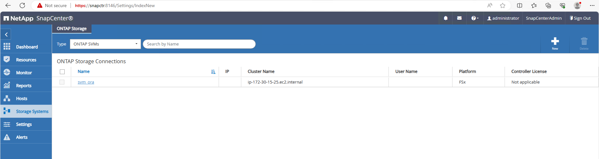
-
将AWS EC2-user添加到
Credential在中Settings。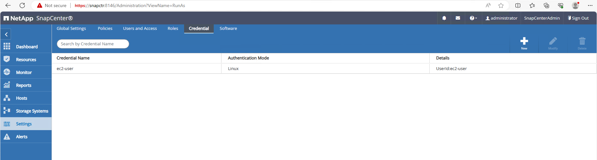
-
添加备用EC2数据库实例并将EC2数据库实例克隆到
Hosts。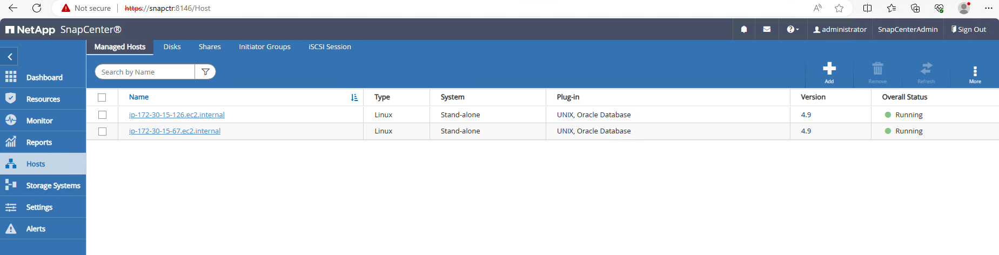
克隆EC2数据库实例应安装和配置类似的Oracle软件堆栈。在我们的测试案例中、安装并配置了网格基础架构和Oracle 19C、但未创建数据库。 -
创建为脱机/挂载完整数据库备份而定制的备份策略。
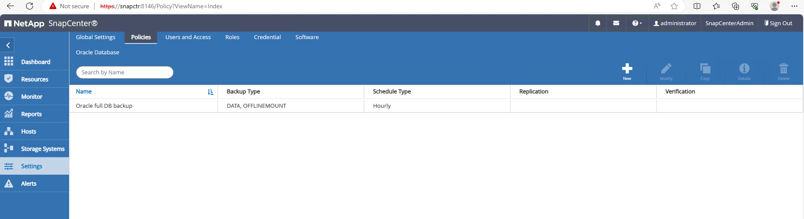
-
在中应用备份策略以保护备用数据库
Resources选项卡。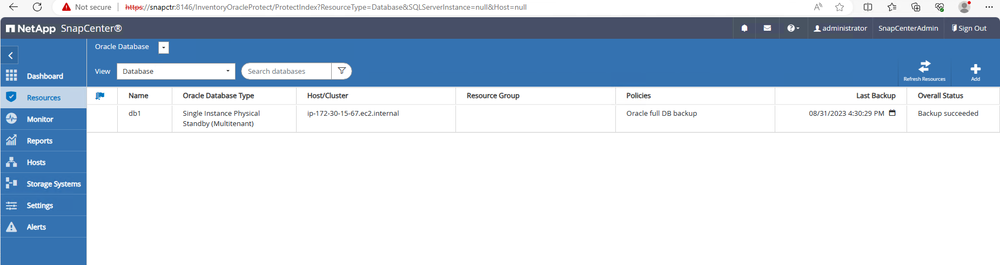
-
单击数据库名称以打开数据库备份页面。选择要用于数据库克隆的备份、然后单击
Clone用于启动克隆工作流的按钮。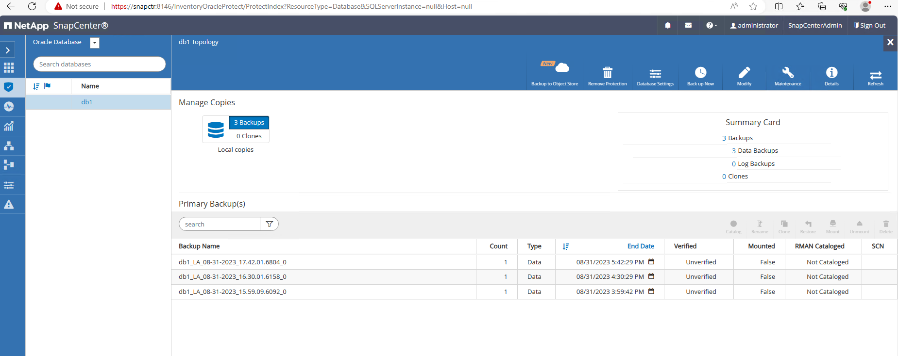
-
选择 …
Complete Database Clone并将克隆实例命名为SID。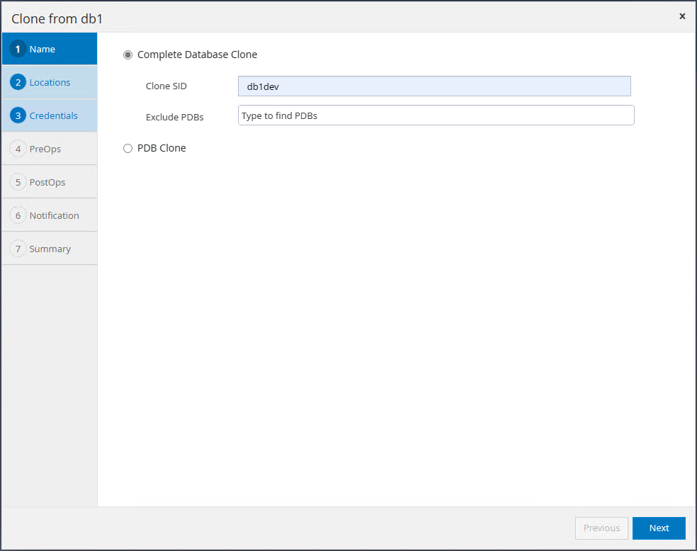
-
选择克隆主机、此主机用于托管备用数据库中的克隆数据库。接受数据文件、控制文件和重做日志的默认设置。将在克隆主机上创建两个ASM磁盘组、它们与备用数据库上的磁盘组对应。
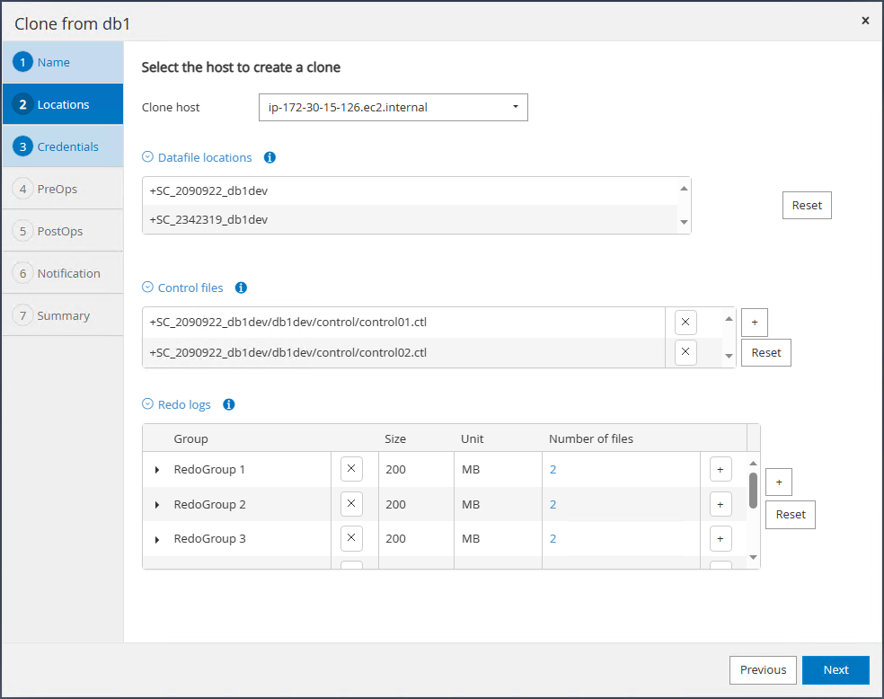
-
基于操作系统的身份验证不需要数据库凭据。将Oracle主目录设置与克隆EC2数据库实例上配置的设置进行匹配。
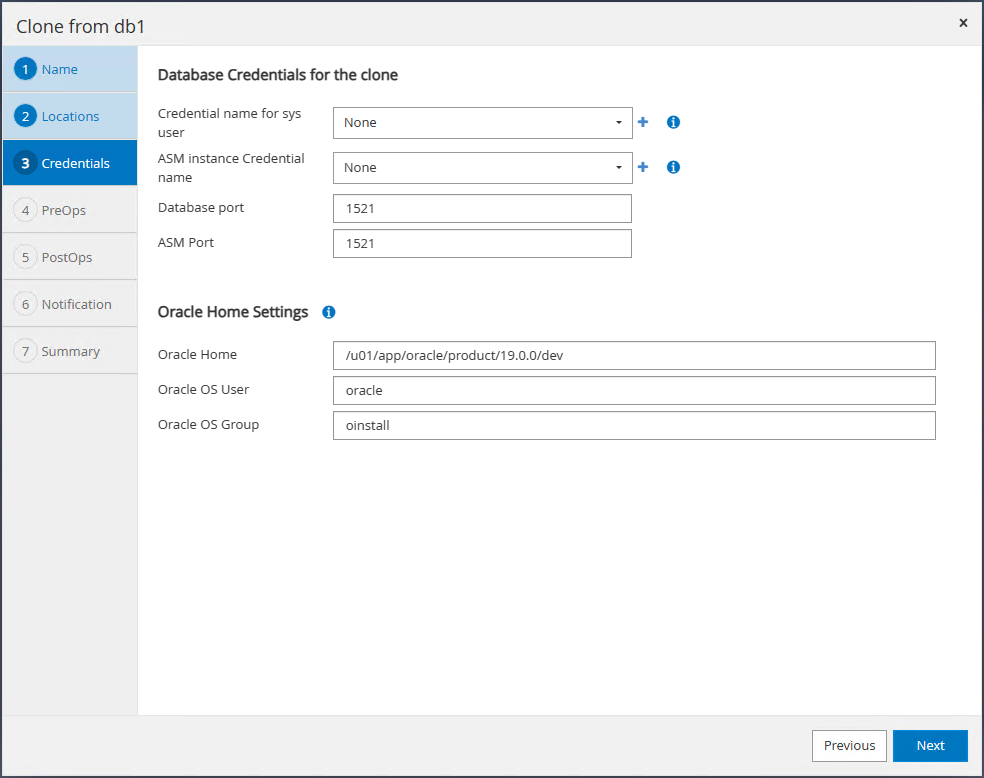
-
根据需要更改克隆数据库参数、并指定要在回放之前运行的脚本(如果有)。
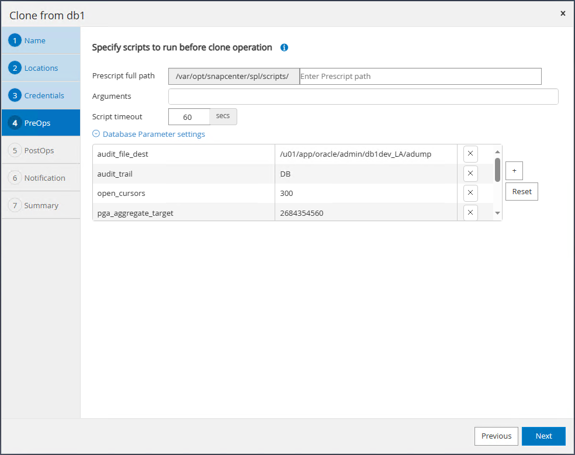
-
输入要在克隆后运行的SQL。在演示中、我们执行了一些命令来关闭开发/测试/报告数据库的数据库归档模式。
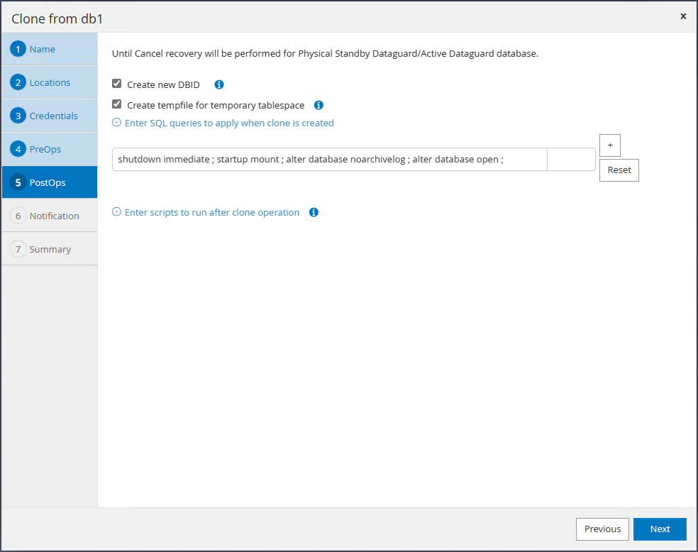
-
根据需要配置电子邮件通知。
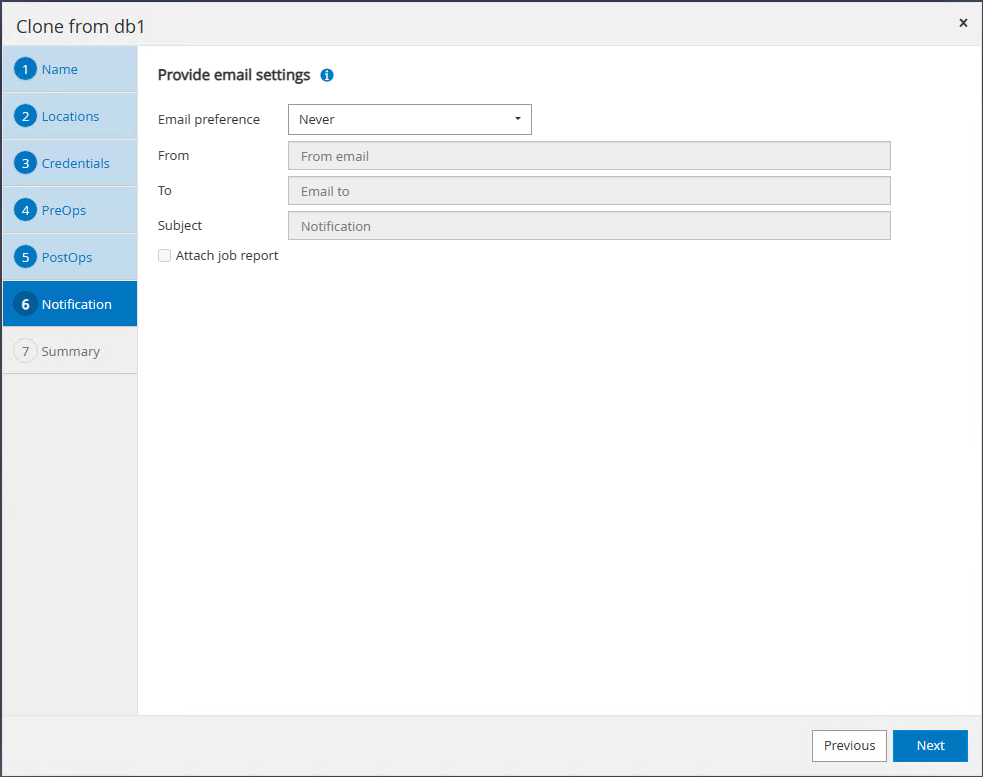
-
查看摘要、单击
Finish以启动克隆。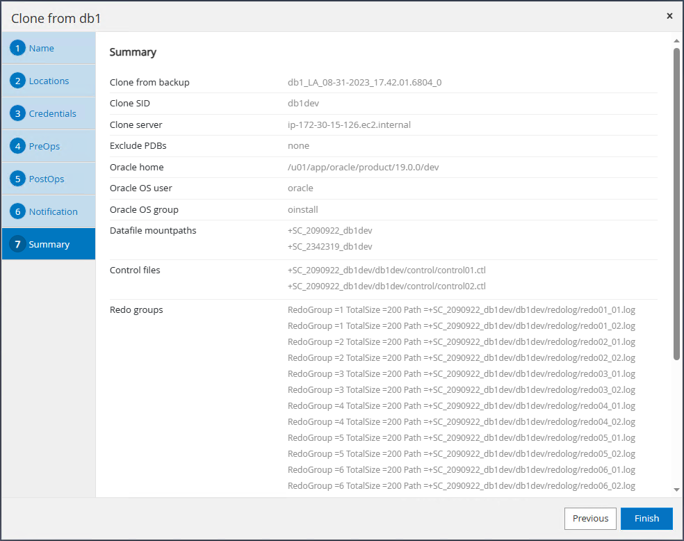
-
在中监控克隆作业
Monitor选项卡。我们发现、克隆数据库卷大小约为300 GB的数据库大约需要8分钟。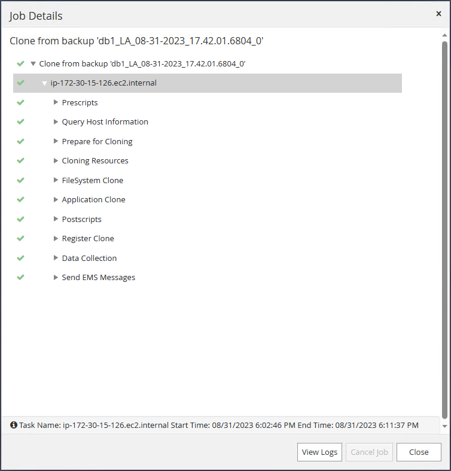
-
验证SnapCenter中的克隆数据库、该数据库会立即注册到中
Resources克隆操作后立即单击选项卡。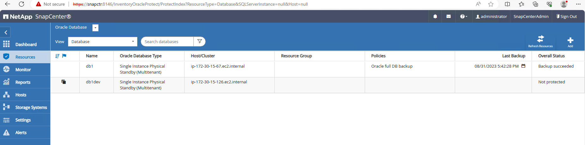
-
从克隆EC2实例查询克隆数据库。我们验证了主数据库中发生的测试事务已向下遍历到克隆数据库。
[oracle@ip-172-30-15-126 ~]$ export ORACLE_HOME=/u01/app/oracle/product/19.0.0/dev [oracle@ip-172-30-15-126 ~]$ export ORACLE_SID=db1dev [oracle@ip-172-30-15-126 ~]$ export PATH=$PATH:$ORACLE_HOME/bin [oracle@ip-172-30-15-126 ~]$ sqlplus / as sysdba SQL*Plus: Release 19.0.0.0.0 - Production on Wed Sep 6 16:41:41 2023 Version 19.18.0.0.0 Copyright (c) 1982, 2022, Oracle. All rights reserved. Connected to: Oracle Database 19c Enterprise Edition Release 19.0.0.0.0 - Production Version 19.18.0.0.0 SQL> select name, open_mode, log_mode from v$database; NAME OPEN_MODE LOG_MODE --------- -------------------- ------------ DB1DEV READ WRITE NOARCHIVELOG SQL> select instance_name, host_name from v$instance; INSTANCE_NAME ---------------- HOST_NAME ---------------------------------------------------------------- db1dev ip-172-30-15-126.ec2.internal SQL> alter session set container=db1_pdb1; Session altered. SQL> select * from test; ID ---------- DT --------------------------------------------------------------------------- EVENT -------------------------------------------------------------------------------- 1 31-AUG-23 04.49.29.000000 PM a test transaction on primary database db1 and ec2 db host: ip-172-30-15-45.ec2. internal SQL>
这样就可以从FSx存储上的Data Guard中的备用数据库克隆和验证新的Oracle数据库、以供开发、测试、报告或任何其他使用情形使用。在Data Guard中、可以从同一备用数据库克隆多个Oracle数据库。
从何处查找追加信息
要了解有关本文档中所述信息的更多信息，请查看以下文档和 / 或网站：
-
Data Guard概念和管理
-
WP-7357：《基于EC2和FSx的Oracle数据库部署最佳实践》
-
适用于 NetApp ONTAP 的 Amazon FSX
-
Amazon EC2